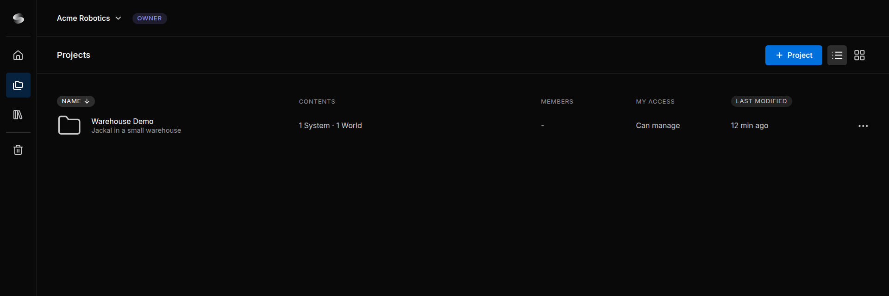
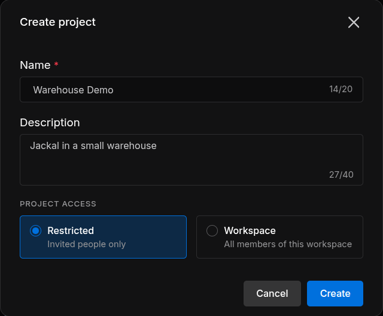
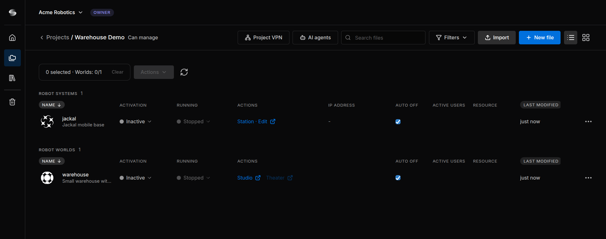

Projects¶
A project holds the Robot Systems and Robot Worlds that belong together and decides who can open them. Every project belongs to a workspace.
1. The Project List¶
Click Projects in the left navigation bar. The portal also opens here after you sign in.


Each row shows the project's name and description, its Contents (for example 1 System · 1 World), its Members, My access (your role) and Last modified. A star marks a favorite, and a green Running badge shows while a file of the project is active.
Click a project to open it. The ⋯ button at the end of a row opens the project menu:
| Item | Shown to | Does |
|---|---|---|
| Manage access | Managers | Invites people, changes roles and sets the project access (Share and Collaborate) |
| Add to favorites | Everyone | Lists the project under Favorites on Home |
| Duplicate project | Managers | Copies the project |
| Project settings | Managers | Name, description and project information |
| Move to trash | Managers | Moves the project to Trash |
2. Create a Project¶
- On the project list, click + Project. A workspace without projects also offers Create new project.
- Enter a Name (up to 20 characters) and, if you like, a Description (up to 40 characters).
- Choose the Project access: Restricted (Invited people only, the default) or Workspace (All members of this workspace).
- Click Create. The new project opens.


- If + Project is dimmed, only the workspace's owner and admins can create projects there. The owner can turn on Members can create projects (Workspaces and People).
- Your workspace's plan limits how many projects the workspace can hold; projects in Trash do not count (Credits and Usage).
3. The Project Page¶
Click a project on the list to open it. The top bar shows Projects (back to the list), the project's name and your access.


| Control | Does |
|---|---|
| Project VPN | Connects your computer to the project's Stations (Project VPN) |
| AI agents | Shows how to connect an AI agent, and the project link to give it (AI Agents) |
| Search files, Filters | Show only the files whose name contains a text, or of one type or state |
| Import | Creates a file from an .sdr file (Import an .sdr File) |
| New file | Creates a Robot System or a Robot World (Create a File) |
Editors and managers also see the selection bar under the toolbar (0 selected · Worlds: 0/1, Clear, Actions), which handles several files at once.
The files are listed in two tables, Robot Systems and Robot Worlds. Each row shows the file's Activation and Running state, the Actions links that open it, a Station's IP address, Auto off, Active users, Resource use and Last modified (Activate and Run). Clicking a row selects the file; files open only from their Actions links. The ⋯ button at the end of a row holds the file actions.
4. Project Access and Roles¶
Project access decides who can open the project: only the people invited to it (Restricted, the default), or also every member of the workspace (Workspace). Managers change it in Manage access (Share and Collaborate).
Each person in a project has one of three roles, shown in lists as Manager, Editor and Viewer:
- Can manage, for people who look after the project: access, copies, downloads and Trash.
- Can edit, for people who build and run the Robot Systems and Robot Worlds.
- Can view, for people who look and review without changing anything.
The person who created a project can manage it, and so can the workspace's owner and admins.
| Action | Can view | Can edit | Can manage |
|---|---|---|---|
| Open the project; see its files, their states and active users | ✓ | ✓ | ✓ |
| Open Station · Edit, Station · Live, Studio and Theater | view only | ✓ | ✓ |
| Create, import, duplicate, rename and trash files | — | ✓ | ✓ |
| Activate, run, stop and deactivate files; change Auto off | — | ✓ | ✓ |
| Download a local copy of a file | — | — | ✓ |
| Invite people, change roles, set the project access | — | — | ✓ |
| Duplicate the project, change its settings, move it to Trash | — | — | ✓ |
| Restore or permanently delete the project's items in Trash | — | — | ✓ |
Controls you cannot use are dimmed and give the reason on hover. Creating projects, managing project libraries and Empty all trash depend on your workspace role.
5. Rename and Duplicate a Project¶
Rename or Describe a Project¶
Open the project's ⋯ menu, choose Project settings, change Project Name (up to 20 characters) or Description, and click Save.
Duplicate a Project¶
Choose ⋯ › Duplicate project. The copy, for example Warehouse Demo copy, is created in the same workspace, with the same description and project access.
- Every Robot System and Robot World is copied with its files. Each Station copy keeps its documents and its apps.
- Official Sodero Worlds, and the official Sodero files that other Worlds use, are left out. A message names them.
- Check Manage access on the copy and invite the people who need it.
- The copy counts toward your plan's project limit.
6. Download a Local Copy¶
Managers can keep a Robot System or Robot World outside Sodero: open the file's ⋯ menu on the project page and choose Download local copy. The browser saves an .sdr file named after the file, for example jackal.sdr. To keep a whole project, download each of its files.
Use the copy to keep a backup, to import it into another project, or to load a Robot System on a Stellar X controller with Load SDR (Backup and Restore in the Stellar X manual).
Tip: A Station saves its data when it deactivates. Deactivate the Robot System before you download it, so that the copy holds your latest changes.
Official Sodero content stays in Sodero. An official Sodero World cannot be downloaded, and a World that uses official Sodero files is downloaded without them.
7. Move to Trash, Restore and Delete¶
To move a project to Trash, open its ⋯ menu on the project list, choose Move to trash and confirm. Its active files are deactivated first, which ends their use of credits.
Click Trash in the left navigation bar to see the trashed projects, Robot Systems and Robot Worlds. The ⋯ menu of an entry, shown to the people who can manage it, offers:
- Restore, which puts it back. Restoring a project needs room under your plan's project limit.
- Delete permanently, which removes it for good. This cannot be undone.
Workspace owners and admins also have Empty all trash: after asking, it permanently deletes every entry they can manage.
Library files do not go to Trash. Deleting a file from My Library or from a project's library removes it at once (Libraries).